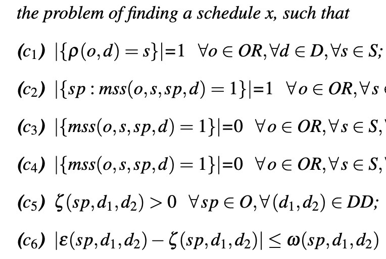

Marco Schouten
Ph.D. candidate
Technical University of Denmark and Pioneer Centre for AI
I am a PhD candidate at the Technical University of Denmark (DTU) and the Pioneer Centre for AI in Copenhagen, working on computer vision and machine learning, and specializing in generative models, diffusion models, and personalization of generative models. I am co-advised by Dim P. Papadopoulos and Serge Belongie.
Previously, I interned at Aptiv, where I worked on deep learning algorithms for map generation. I earned an M.Sc. in Machine Learning from KTH Royal Institute of Technology and a B.Sc. in Computer Engineering from the University of Genoa.
Publications

An ASP-based Approach to Master Surgical Scheduling
CILC, 2022 PDF
We present an Answer Set Programming-based solution for scheduling specialties in hospital operating rooms, tested on real scenarios.

Answer Set Programming in Healthcare: Extended Overview
IPS-RCRA@ AI* IA, 2020 PDF
Overview of ASP-based solutions for healthcare scheduling problems, including operating rooms and nurse scheduling.